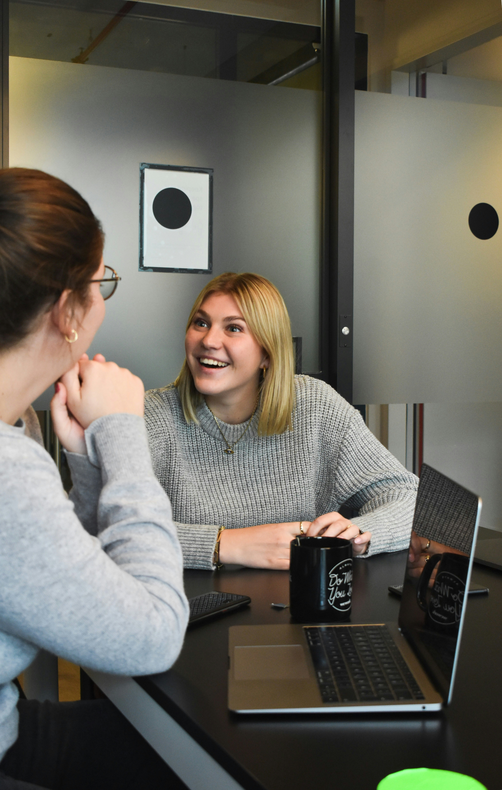

OakStride · Consulting & Advisory
Strategy is easy. Delivery is the hard part.
OakStride is a Nordic consulting and advisory firm that helps organizations turn digital and AI strategy into working platforms, products and operating models — through hands-on leadership, disciplined prioritization and technology governance that holds.
What we do
We take on engagements where strategy needs to become reality — as interim leaders, advisors or transformation leads, always close to delivery.

Interim Technology Leadership
Senior interim roles across application, development and IT operations — with accountability for teams, vendors, budget and delivery from day one. Stability through transitions, vacancies and periods of change.
Digital Strategy & Transformation
From strategy to roadmaps, KPIs and executable plans. We lead the modernization of platforms and ways of working, with quality, efficiency and data security embedded in delivery — not added afterwards.
AI Strategy & Transformation
Pragmatic AI adoption grounded in business value: identifying the right use cases, preparing data and architecture, establishing governance and responsible-use guardrails, and taking AI initiatives from pilot to production.
Technology & Vendor Governance
Governance of outsourced and multi-vendor environments — sourcing, transitions and supplier steering, with vendors held accountable for cost, pace and quality.
PMO & Portfolio Management
Building and running PMO and portfolio functions — budget, planning cadence and prioritization that make trade-offs visible, keep initiatives on track and make decisions stick.
Operational Excellence & Lean IT
Improving how IT delivers — Lean and Six Sigma-based analysis of delivery flows, standardized ways of working and continuous improvement that raise predictability and lower cost.
"Growth that lasts is built ring by ring — every layer carrying the next."
The OakStride wayHow we work
OakStride is a boutique firm built on senior experience — leaders who have owned the results, not just advised on them. We work with minimum bureaucracy and maximum clarity, and we stay close enough to delivery to keep momentum and make decisions stick.
- Retail & e-commercePlatforms, omnichannel, managed services
- Insurance & bankingDigital portfolios, operating models
- Public sectorShared services, digital capability
- Telecom & industryLean IT, sourcing, transformation

Contact
Facing a leadership gap, a transformation that has stalled, or an AI agenda that needs to move from slides to production? Let's have a conversation.
- Emailinfo@oakstride.se
- Phone+46 70 237 17 04
- LocationStockholm, Sweden